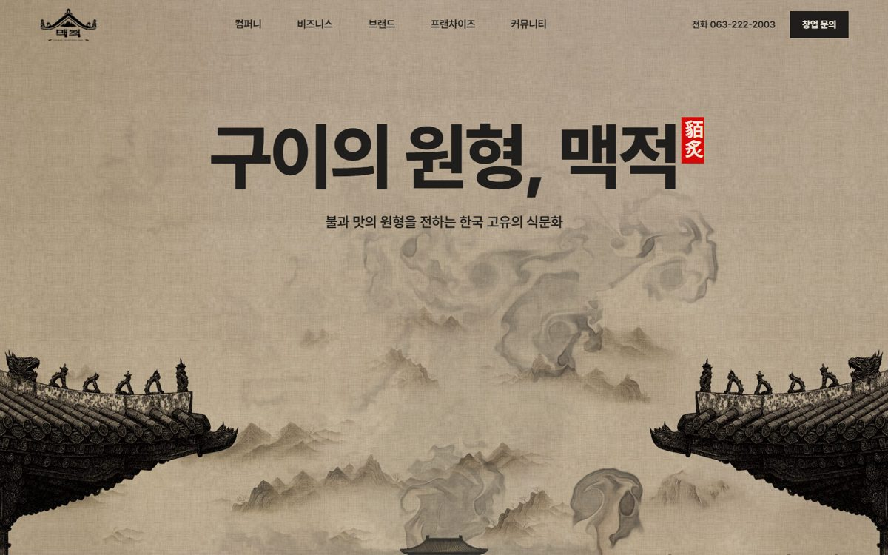
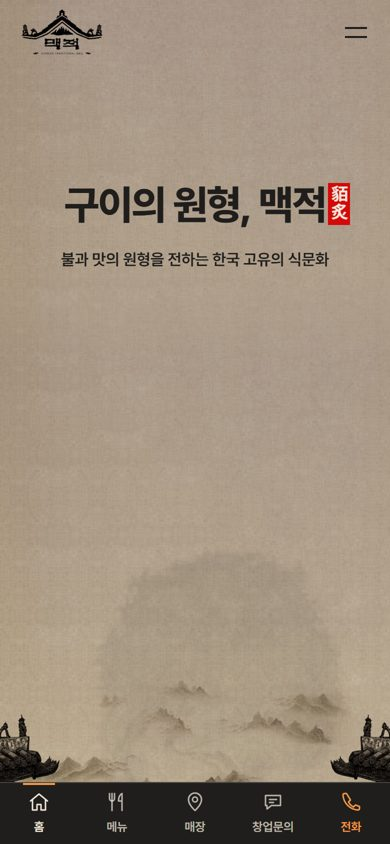
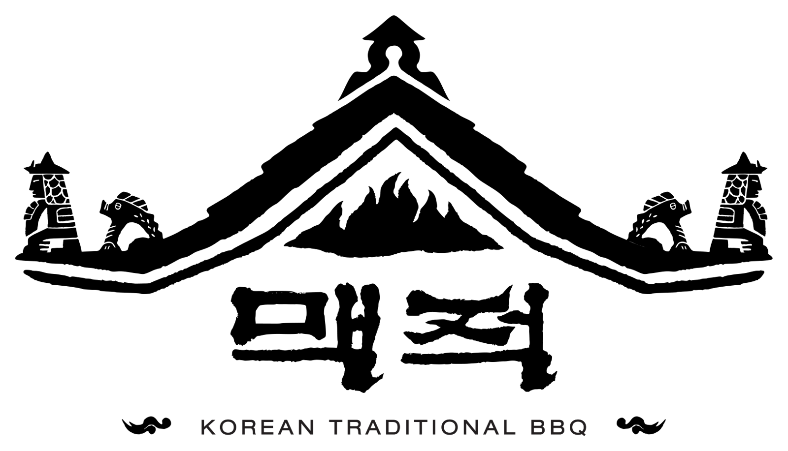
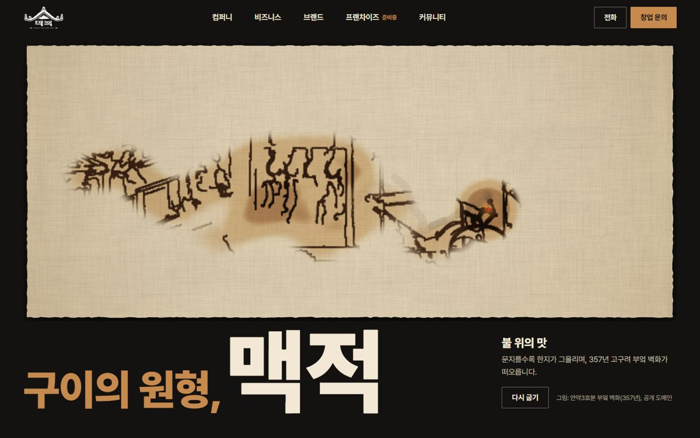
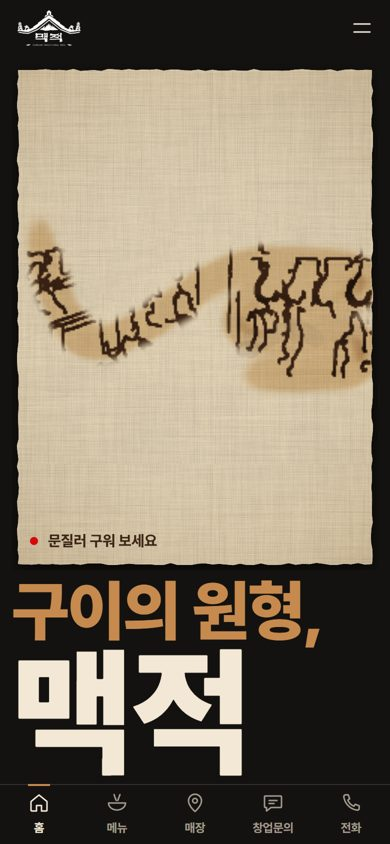
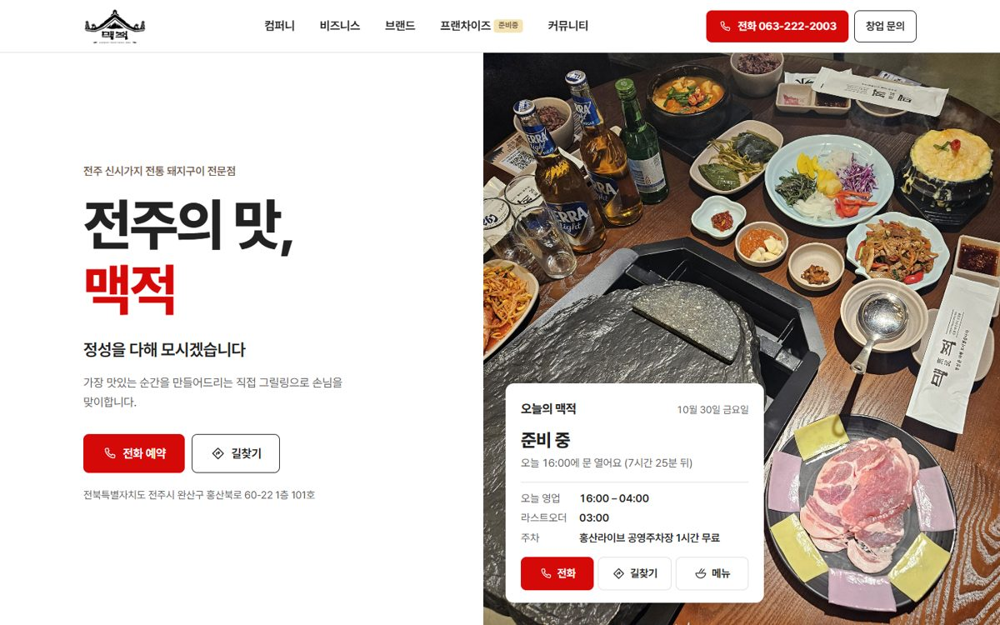
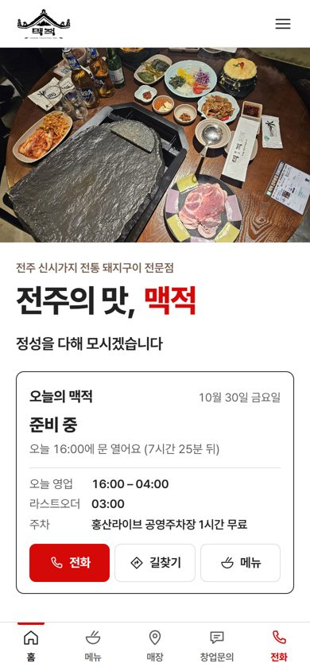

권하는 안1안 · 먹과 불
메뉴판의 수묵 산수 위로, 손이 지나간 자리에 숯불 연기가 먹처럼 번집니다.
- 결
- 대기업 브랜드 사이트처럼 단정하고 묵직한 한국식
- 손이 닿으면
- 발묵(먹 번짐) — "따뜻한 불빛이 번지는 사랑방"
- 잘 맞는 경우
- 가맹 문의자에게 '브랜드 회사'로 보여야 할 때

맥적 전주본점 홈페이지
메인 화면 시안 · 2026.10.30
세 안 모두 요청하신 메뉴 구조(컴퍼니·비즈니스·브랜드·프랜차이즈·커뮤니티)를 그대로 담았습니다. 폰에서 열어 직접 만져 보세요.
권하는 안: 1안 — 프랜차이즈를 준비하는 브랜드 회사의 품격과 저녁 손님이 찾는 매장 정보를 한 화면 흐름에 같이 담습니다.


권하는 안메뉴판의 수묵 산수 위로, 손이 지나간 자리에 숯불 연기가 먹처럼 번집니다.


한지를 문지르면 불에 그을려 익고, 357년 고구려 부엌 벽화가 떠오릅니다.


지금 영업 중인지, 어디인지, 무엇을 먹는지가 첫 화면에 바로 보입니다.
| 컴퍼니 | 기업소개 · 비전 · 연혁 · 오시는길 |
|---|---|
| 비즈니스 | 외식사업 · 가맹사업 · 육가공 및 유통사업 · 식품제조 및 가공사업 |
| 브랜드 | 맥적 |
| 프랜차이즈 | 브랜드 소개 · 창업절차 · 창업문의 (준비 중 표기) |
| 커뮤니티 | 공지사항 · 고객의소리 · 매장찾기 |